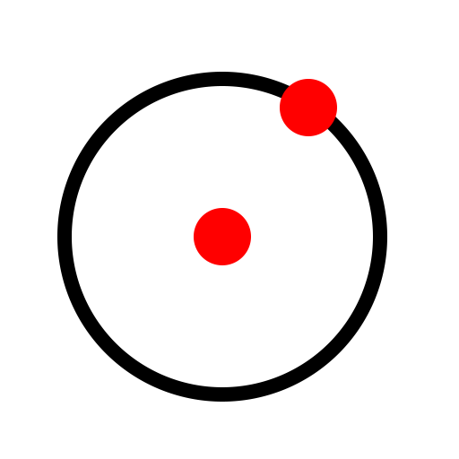

Centro, point
Barra de herramienta / icono:

Menú: Dibujar - Círculo - Centro, point
Acceso directo: C, I
Comandos: circle | ci
Descripción:
Se dibuja un círculo a partir de su centro y uno de sus puntos dados.
Procedimiento:
- Establezca el centro del círculo con el ratón o introduzca una coordenada
en la línea de comandos.
- Defina el radio haciendo clic en uno de los puntos del futuro círculo o
introduzca una coordenada en la línea de comandos. También puede entrar el
valor del radio directamente en la línea de comandos.